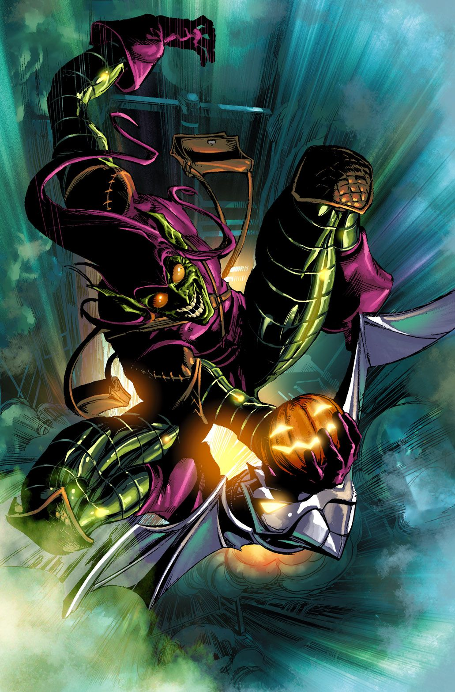
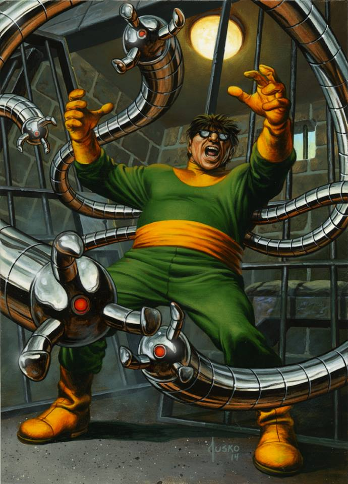
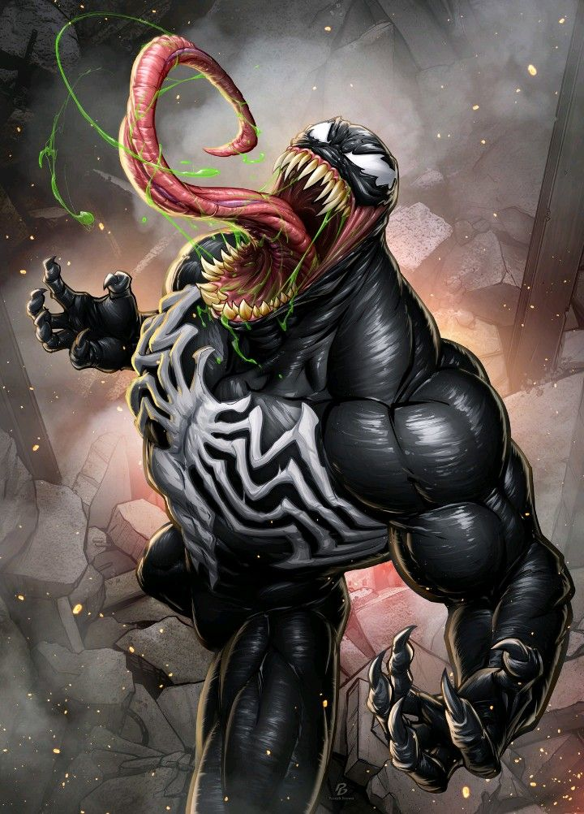
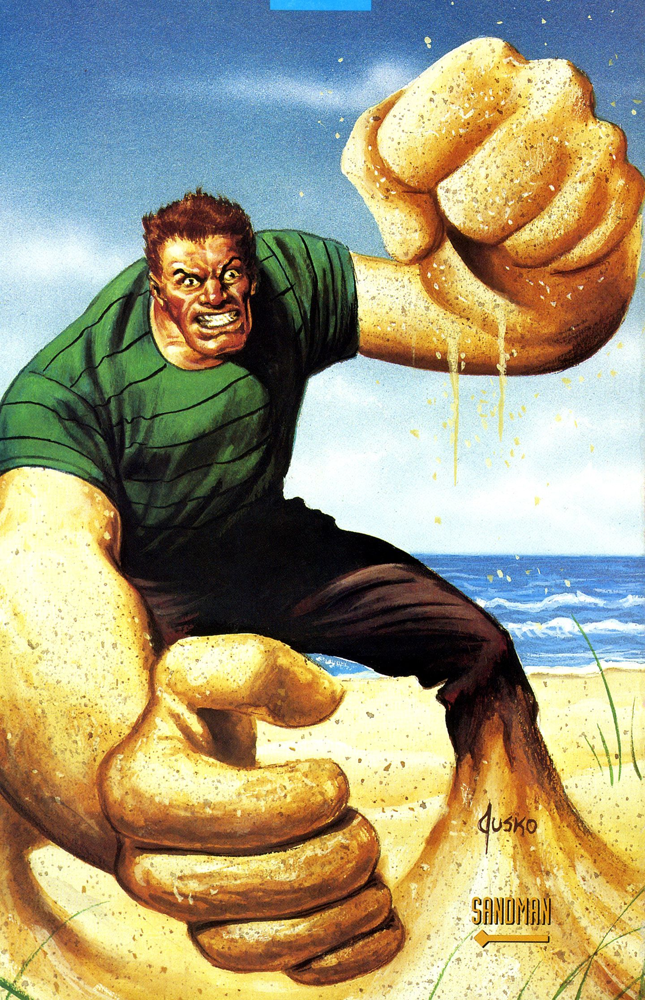
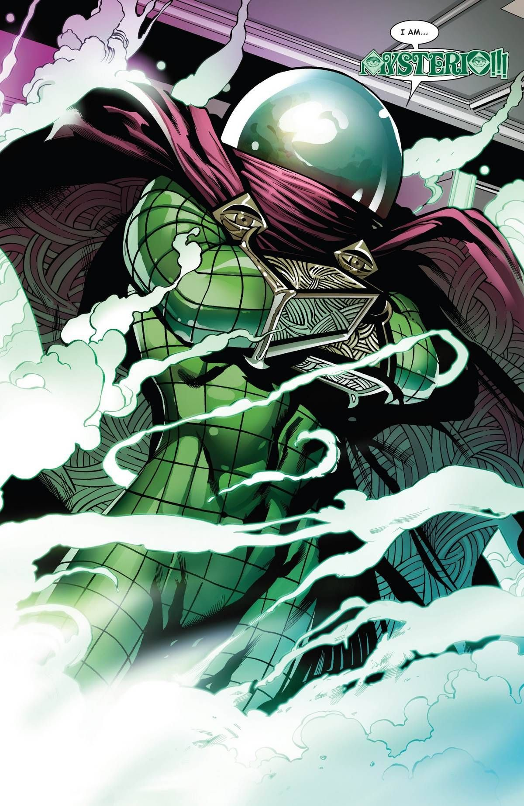
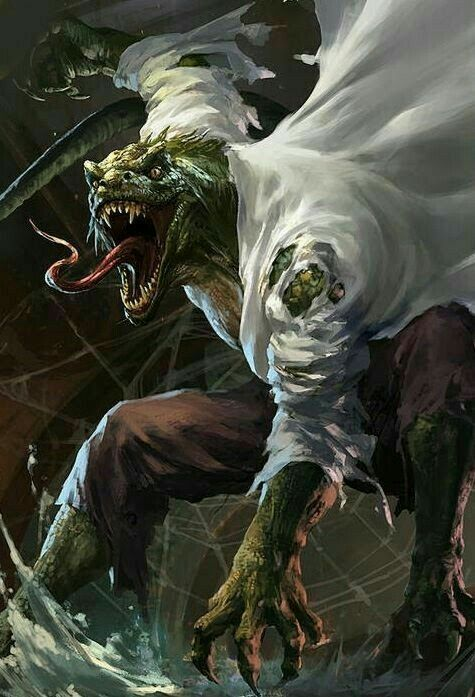

Green Goblin
The Green Goblin might just be the most well-known of all Spider-Man villains. He’s one of those villains we all just love to hate – he’s got a great story, a great design, and great character relationships.
First appearing in The Amazing Spider-Man #14, the Green Goblin starts out as a villain with an unrevealed identity. He flies around on a glider and uses high-tech weaponry, including Halloween-themed explosives.
It’s later learned that this nightmarish villain is actually the wealthy industrialist Norman Osborn. He is exposed to a strength serum his company was working on, which transforms him into a maniacal picture of insanity.
In later issues, others would take up the role of the Goblin, including Norman’s son and Peter Parker’s best friend Harry Osborn.

Doctor Octopus
If you ask someone to name a traditional Spider-Man villain, their minds will likely be flooded from dozens of choices they’ve seen in film or print. But one of the first enemies they’ll think of will be Doctor Octopus.
Doc Ock is a freak of science with a vengeful spirit and a towering intellect. Four mechanical arms are grafted onto his back, and he controls them with lethal precision.
Doc Ock has had some strange story arcs throughout the series, dying and being resurrected on more than one occasion. He even switches bodies with Peter Parker at one point, becoming the Superior Spider-Man.

Venom
Of all the villains on this list, the coolest looking is probably Venom. He’s vicious, strong, and has Spider-Man’s abilities and then some.
Fully revealed in 1988 with Amazing Spider-Man #300, Venom is a powerhouse of teeth, muscles, and insanity. In a few issues before #300, Spider-Man had been wrestling morally and physically with his new black suit, which was made up of an alien symbiote that arrived on a meteorite. The suit nearly succeeded in taking over the hero, but he eventually overpowered it. The alien being then attached itself to Eddie Brock, a journalist who had a beef with Peter Parker. This time, the symbiote succeeded, and a new monster was born.
Occasionally, Venom shows some heroic tendencies, even going as far as rescuing certain people. However, he still usually has no love for Spider-Man.
Various people have been merged with the Venom symbiote, and the results are often disastrous.

Sandman
The Sandman is one of the strangest of all comic villains. He’s also one of the deadliest.
Created by Stan Lee and Steve Ditko, Sandman first appeared in The Amazing Spider-Man #4. A freak accident involving radioactive sand transforms a criminal named Flint Marko (real name is William Baker) into a living mineral. He is able to retain his human form whenever he wishes, but he can break down into an avalanche of sand and change into various shapes to aid him in combat. He can take a punch, too – his sandy structure makes him invulnerable to most attacks.
Sandman’s character development is particularly interesting. He actually had an affinity for sand before he got his powers, making sand sculptures as a child. His motivations change in various comic and movie storylines – sometimes he’s a criminal with a complicated family history, and other times he’s a more tragic character showing traces of redemption. In Spider-Man 3, his thievery is motivated by his need for money to pay for his daughter’s medical issues. In this film, Flint Marko was also involved with the death of Uncle Ben.

Mysterio
First appearing in Amazing Spider-Man #13, Mysterio is an enigmatic trickster, using science and illusion to outwit Spidey and co. He often uses gaseous drugs against his opponents, and his fighting skills are well-honed.
Mysterio is actually an actor named Quentin Beck. His knowledge of special movie effects gave him all he needed to start a life of crime, starting by trying to frame Spider-Man for a bank robbery. Over the years, he’s been defeated numerous times by various villains, but he keeps coming back for more.

The Lizard
The Lizard is one of Spidey’s most well-known opponents. First appearing in 1963, he’s exactly what his name suggests – a lizard-man with lethal abilities and psychotic motivations.
The Lizard can be described as the unfortunate result of the abuse of science. A well-known researcher named Dr. Connors subjects himself to his own experiments, hoping to produce a human with reptile-like regenerative abilities. The unintended result is teeth, claws, scales, and a really bad attitude.
In many issues of the comics, Connors is able to maintain his human form. Cures and stopgap measures are made intermittently to keep him from transforming again, but he still always seems to go back to his dangerous Lizard persona.